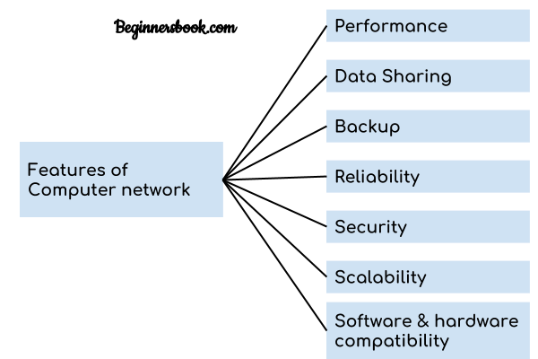

Features Of Computer network
Features Of Computer network
A list Of Computer network features is given below.
- Communication speed
- File sharing
- Back up and Roll back is easy
- Software and Hardware sharing
- Security
- Scalability
- Reliability
Communication speed
Network provides us to communicate over the network in a fast and efficient manner. For example, we can do video conferencing, email messaging, etc. over the internet. Therefore, the computer network is a great way to share our knowledge and ideas.
File sharing
File sharing is one of the major advantage of the computer network. Computer network provides us to share the files with each other.
Back up and Roll back is easy
Since the files are stored in the main server which is centrally located. Therefore, it is easy to take the back up from the main server.
Software and Hardware sharing
We can install the applications on the main server, therefore, the user can access the applications centrally. So, we do not need to install the software on every machine. Similarly, hardware can also be shared.
Security
Network allows the security by ensuring that the user has the right to access the certain files and applications.
Scalability
Scalability means that we can add the new components on the network. Network must be scalable so that we can extend the network by adding new devices. But, it decreases the speed of the connection and data of the transmission speed also decreases, this increases the chances of error occurring. This problem can be overcome by using the routing or switching devices.
Reliability
Computer network can use the alternative source for the data communication in case of any hardware failure.